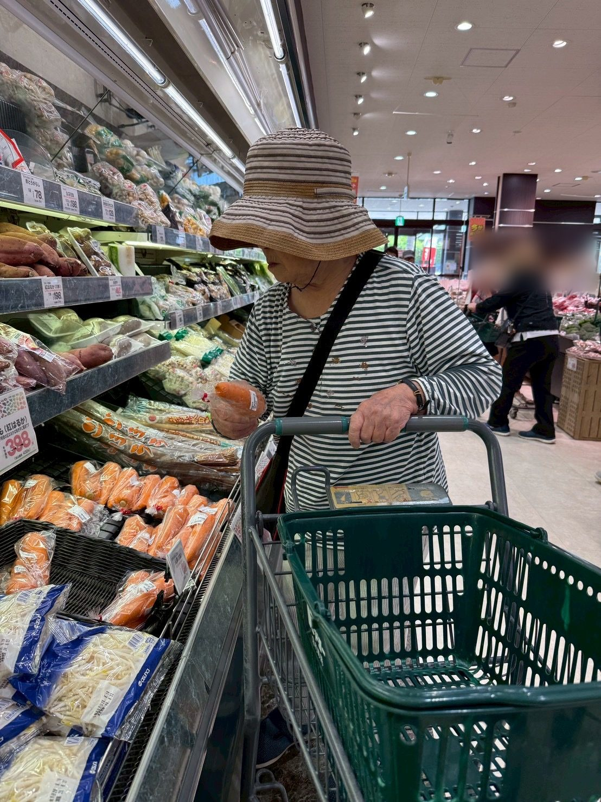
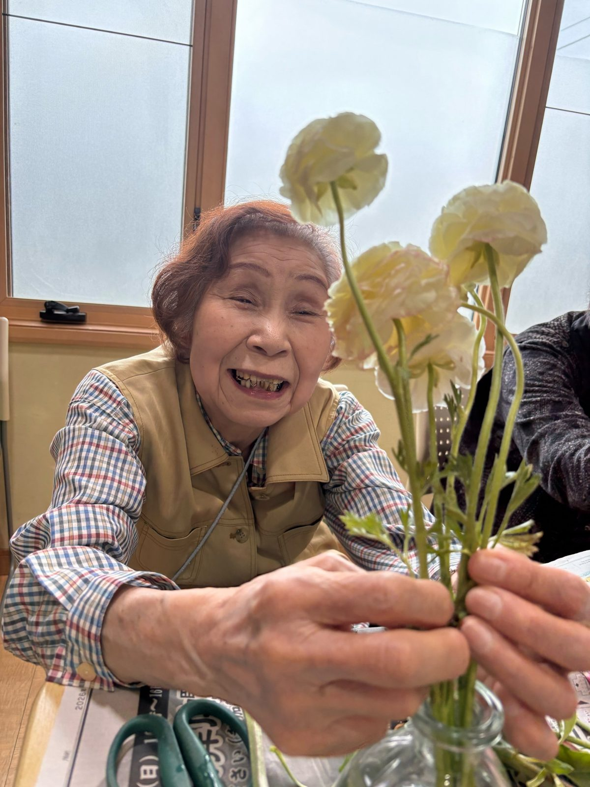
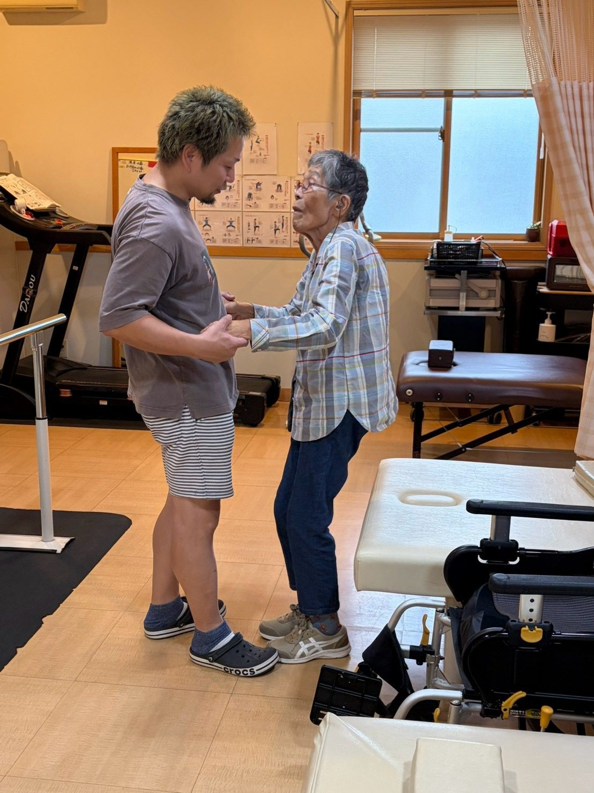
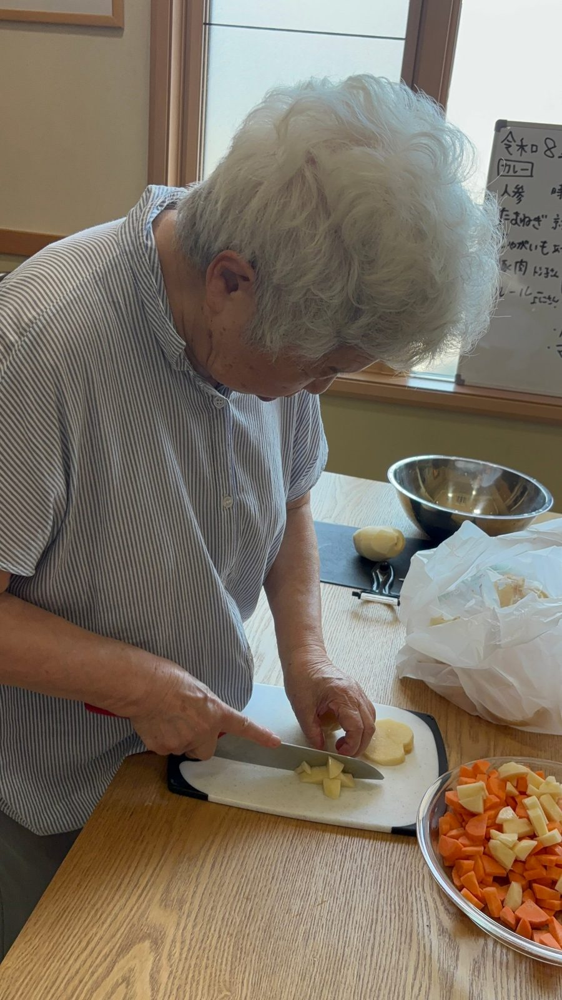
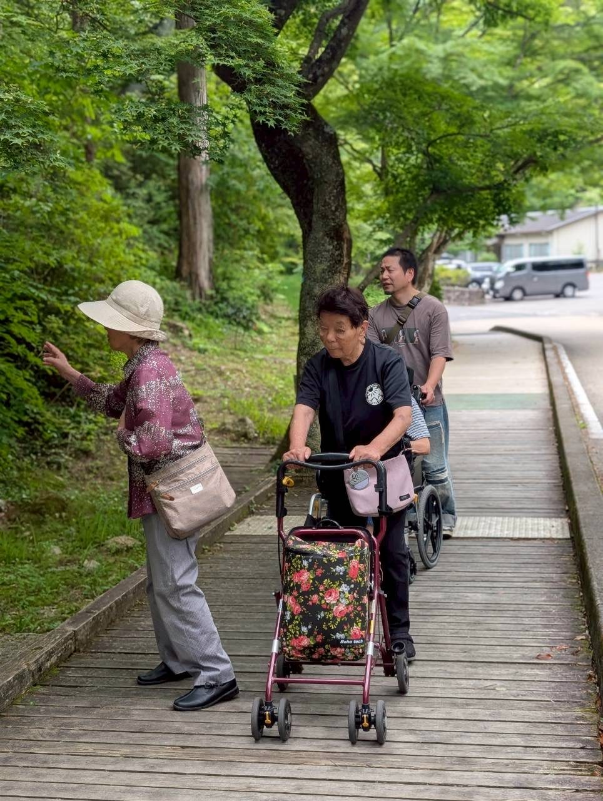
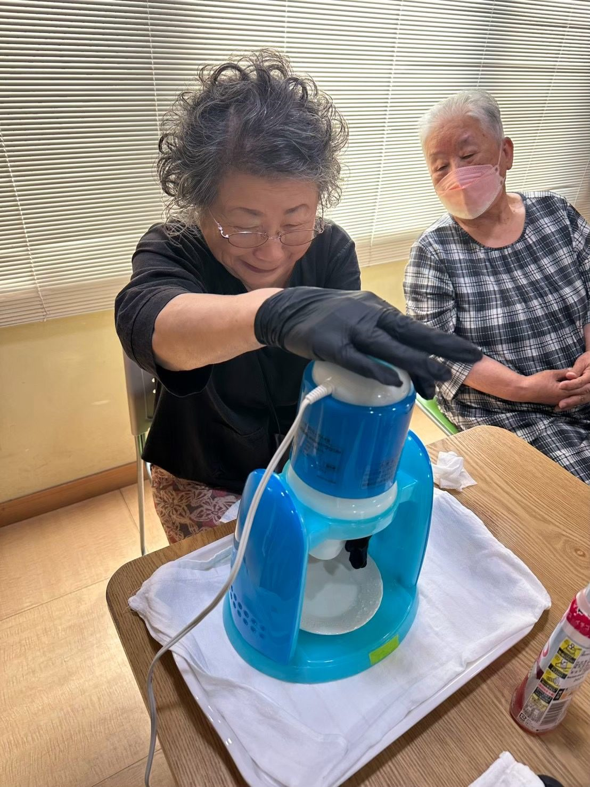
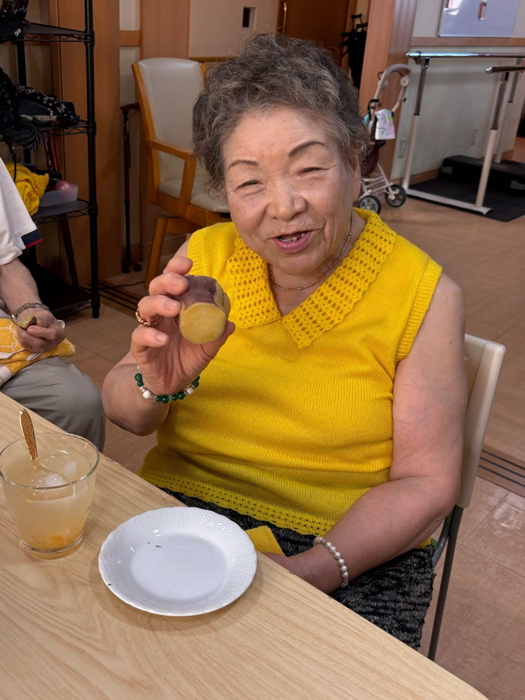
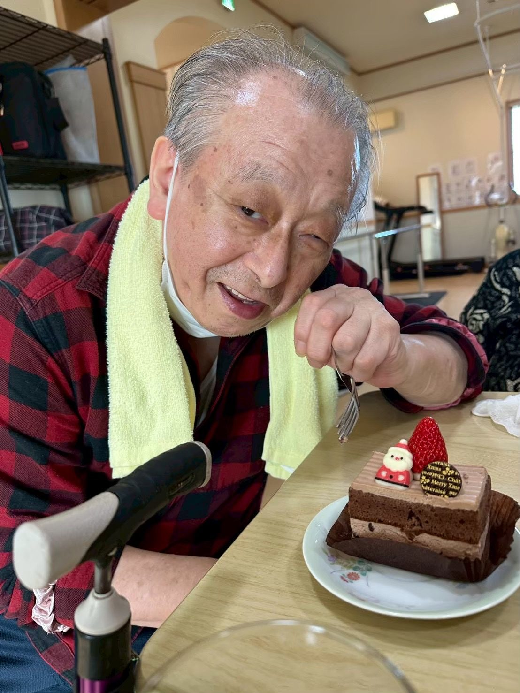

材料を買いに行く
何を作るかを決め、材料をスーパーで思い出し、献立に合わせた材料を選びます。カートを押して歩くこともそのまま訓練です。認知機能訓練と室内では行なえない実際の段差や坂道、人を避けて歩く事も全てを訓練として実施します。
Day service
機械よりも、人の手で。おひとりおひとりの体に合わせて、ご自宅でも続けられる運動を一緒に取り組みます。


毎日の様子は Instagram で
温かみのある、心の通うデイサービスを目指しています。
マシンに頼らず、職員が体に触れながら、その日の体調に合わせて訓練の内容を変えます。

身近な物を使った運動を多く取り入れています。デイの日以外も、ご自宅で続けやすいように。
痛みや持病に合わせて、無理のない範囲から始めます。
屋外での活動も取り入れて、暮らしの中で使える体の力を保ちます。
日曜は、朝から夕方まで過ごす1日型です。お昼ごはんは、出されたものを食べるだけではありません。材料を買いに行くところから、利用者さんと一緒に作ります。外では、実際の道を歩く練習もします。

何を作るかを決め、材料をスーパーで思い出し、献立に合わせた材料を選びます。カートを押して歩くこともそのまま訓練です。認知機能訓練と室内では行なえない実際の段差や坂道、人を避けて歩く事も全てを訓練として実施します。

皮をむく、切る、炒める。できることを分担し合ってみんなで作ります。高齢になっても実はできる事が沢山あります。ご自宅では危ないからと、やれなくなってしまった事もココカラプラスでは諦めません。

平らな床だけでなく実際の路面を歩く練習をします。段差や傾きのある道も、職員がそばで支え見守り訓練を実施します。室内では身体を動かす気分になれない利用者さんも、綺麗な景色や、懐かしい場所ではしっかり歩けるんです。筋力が落ちているのではなく、様々な事に興味が無くなって活動量が低下している場合が多いんです。
季節ごとの行事を、みんなで楽しんでいます。

桜の下をみんなで歩いて、ベンチでひと休み。季節の花と外の空気を楽しみます。

暑い日は、その場で削ったかき氷。冷たくて、みんな笑顔になります。

焼きたての焼き芋を、みんなでほおばります。

飾りつけをして、クリスマスの会。一年の終わりをにぎやかに過ごします。